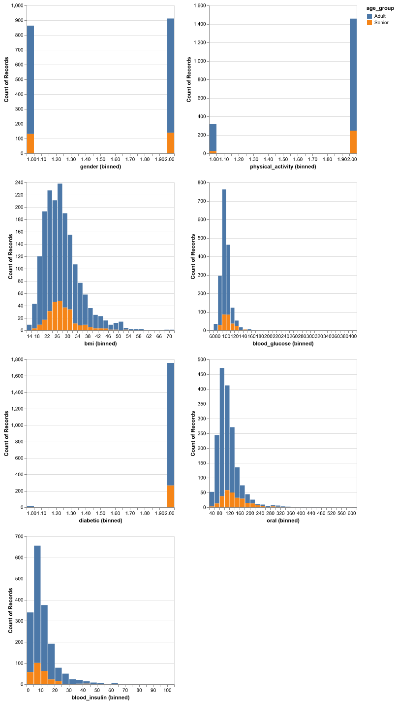
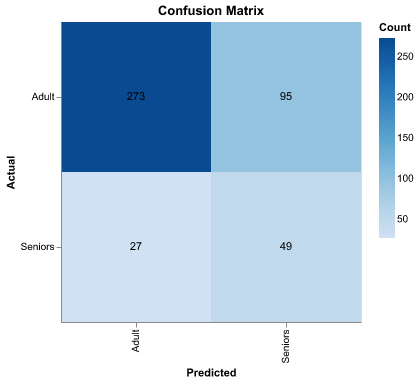
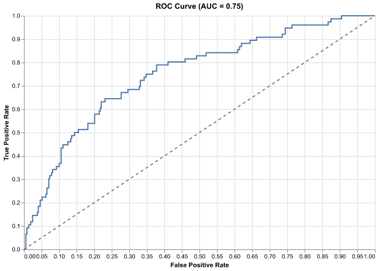

| gender | physical_activity | bmi | blood_glucose | diabetic | oral | blood_insulin | |
|---|---|---|---|---|---|---|---|
| count | 1775 | 1775 | 1775 | 1775 | 1775 | 1775 | 1775 |
| mean | 1.51 | 1.82 | 27.78 | 99.11 | 1.99 | 113.89 | 11.66 |
| std | 0.5 | 0.38 | 7.15 | 17.08 | 0.1 | 45.79 | 9.54 |
| min | 1 | 1 | 14.5 | 63 | 1 | 40 | 1.02 |
| 25% | 1 | 2 | 22.7 | 91 | 2 | 87 | 5.8 |
| 50% | 2 | 2 | 26.7 | 97 | 2 | 104 | 8.89 |
| 75% | 2 | 2 | 31.1 | 103 | 2 | 129 | 14.26 |
| max | 2 | 2 | 70.1 | 405 | 2 | 604 | 102.29 |
Predicting age group from health and nutritional status of Americans
Summary
In this analysis we explored the use of several classification models to predict whether a respondent is an adult or senior (essentially below or above age 65) based on their health and nutritional data. Our most promising model used Logistic Regression. While it appeared promising, much of the model’s accuracy was achieved by classifying most respondents as adults, since this was the majority class. Precision and recall for predicting the senior class was quite low. This suggests that the model has considerable room for improvement, which could be achieved through optimizing the hyperparameters and selecting models based on precision, recall, or f1 scores, rather than general accuracy. With the goal of correctly classifying each group, false positive and false negative errors were both equally important for our analysis, and applying class weighting is worth exploring in future research. Once the model performs better on those metrics, it would be worth exploring which health and nutritional features are most predictive of age, which could provide suggestions for strategic public health programs.
Introduction
Understanding age groups, particularly distinguishing seniors from non-seniors, is an important aspect of healthcare, as it can significantly influence medical decisions, resource allocation, and policy development. In many cultures, especially in non-Western societies, caring for elders is a deeply ingrained value. However, this is not always the case in Western societies, such as the United States, where healthcare and social services for seniors may not always receive the attention they require. According to the Healthy Aging 2022 report, the aging population in the U.S. faces unique challenges that can affect their health outcomes.
While taking care of elders is a core value of many cultures, this is not a hallmark of many western societies, including the United States (Healthy Aging Center (2022)). Given these challenges, we ask: Can health measures (such as activity levels, medical conditions, and lifestyle factors) predict whether an individual is a senior in the context of the U.S.? This is a critical question because understanding how health data correlates with age classification can help improve resource allocation and public health interventions aimed at ensuring that older adults receive the care they need.
From a real-world perspective, stakeholders in healthcare, public health, and policy (such as hospitals, insurance companies, and government agencies) are invested in ensuring that seniors have access to adequate healthcare services, regardless of their age. Predicting senior status using health data can help these stakeholders tailor interventions, optimize healthcare services, and promote balanced health outcomes across different age groups.
Thus, the goal of this analysis is not just to classify individuals based on age, but to use health-related metrics to better understand and address the needs of an aging population, improving quality of life and reducing disparities in healthcare provision for seniors.
The dataset used to answer this question is the National Health and Nutrition Survey 2013-2014 (NHANES) Age Prediction Subset (NHANES (2019)). It was originally prepared for a research paper on predicting diabetes and cardiovascular disease in patients (Dinh and Miertschin (2016) and Mukhtar and Al Azwari (2021)). The dataset’s stated purpose was to assess the health and nutritional status of adults and children in the United States (Papazafiropoulou (2024)), however respondents were classified as either Adults (respondents under 65 years of age) or Seniors (respondents 65 years of age or older). Respondents were located in the United States and provided data through interviews, physical examinations, and laboratory tests to the National Center for Health Statistics (NCHS) (part of the Centers for Disease Control and Prevention (CDC)).
The dataset has 10 variables and 2278 rows, with each row representing a respondent. The variables are:
SEQN - The respondent ID aka sequence number
age_group - The respondent’s age group (adult or senior)
RIDAGEYR - The respondent’s age in years
RIAGENDR - The respondent’s gender (1 represents Male, 2 represents Female)
PAQ605 - Whether the respondent engages in weekly moderate or vigorous physical activity (1 means they do, 2 means they don’t)
BMXBMI - The respondent’s body mass index
LBXGLU - The respondent’s blood glucose after fasting
DIQ010 - Whether the respondent is diabetic (1 is yes, 2 is no)
LBXGLT - A measure of the respondent’s oral health
LBXIN - The respondent’s blood insulin levels
According to the dataset description, there are no missing values, though EDA found some unexpected values for physical activity and diabetic. Since no explanation was provided for these codes, we omitted these respondents from our analysis.
The following software packages were used in this project: Chorev et al. (2022), Harris et al. (2020), Bantilan (2020), Pedregosa et al. (2011), The pandas development team (n.d.), VanderPlas et al. (2018), Van Rossum and Drake (2024).
Methods & Results
Description of methods
We began by loading and cleaning the data. This included renaming columns to improve clarity and ensure they were easily understandable. We noticed some unexplained values in the physical activity and diabetic variables that were not documented in the dataset description. To maintain data integrity, we decided to remove these observations as they might introduce noise or bias into the analysis.
Next, we verified the claim in the dataset documentation stating there were no missing values. After confirming this, we proceeded to split the data into training and test sets, ensuring that this split was done carefully to avoid data leakage. To prevent overfitting and ensure that our results generalized well, we conducted exploratory data analysis (EDA) on the training set. This involved reviewing summary statistics for each variable to understand their distributions, relationships, and what preprocessing might be necessary.
For preprocessing, we performed one-hot encoding on categorical variables and standardized the numeric variables to bring all features onto a similar scale. Given that the dataset had no missing values, there was no need for further imputation or handling of null entries.
We then tested three models: a dummy classifier, logistic regression, and support vector classifier (SVC). These models were selected for their balance between simplicity, interpretability, and suitability for our task. Logistic regression, in particular, was chosen because of its high interpretability, which is crucial in healthcare applications where understanding model decisions is important. Also, looking at the EDA, we realised class imbalance in data set hence giving the dummy module highest score since it typically predicts the majority class most of the time. Instead of focusing solely on accuracy, which is often misleading in imbalanced datasets, we evaluate model performance using metrics such as precision, recall, F1-score, and the area under the precision-recall curve (AUC-PR), which give more insight into the model’s ability to identify the minority class. After evaluating the performance of all three models, even though the dummy model had the highest score, looking at its limitations stated above, logistic regression was selected for our final analysis as it showed the best mean cross-validation accuracy.
We used the logistic regression model to predict outcomes on the test dataset. To assess its performance, we visualized the model’s predictions and compared them against the actual outcomes.
The superior performance of the dummy model highlights the impact of class imbalance on model evaluation. This serves as a reminder that accuracy alone is not always a sufficient metric for evaluating model performance, especially in the presence of imbalanced classes. Going forward, we could explore methods to better handle this imbalance and reassess model performance using more robust evaluation metric
Inspecting errors
The dataset source stated that “gender”, “physical_activity”, and “diabetic” are binary features. However, “physical_activity”, “diabetic” contained three unique values instead of two. According to the dataset’s documentation, ‘physical_activity’ should only have 1 or 2 as values so rows containing 7 should be omitted. Similarly, ‘diabetic’ should only have 1 or 2 as values so rows containing 3 should be omitted.
As a result, we removed 59 observations from the dataset during validation (1 case where physical activity was “7” and the remaining cases where diabetic was set to “3”).
Renaming columns and glancing at their values
We first renamed the columns of the data set to be more meaningful and easy to understand. Below is a short description of each column in the data set.
- RIDAGEYR: Respondent’s Age
- RIAGENDR: Respondent’s Gender (1 is Male / 2 is Female)
- PAQ605: Does the respondent engage in weekly moderate or vigorous-intensity physical activity (1 is yes / 2 is no)
- BMXBMI: Respondent’s Body Mass Index
- LBXGLU: Respondent’s Blood Glucose after fasting
- DIQ010: If the Respondent is diabetic (1 is yes / 2 is no)
- LBXGLT: Respondent’s Oral
- LBXIN: Respondent’s Blood Insulin Levels
Splitting the data set
Prior to conducting EDA, we split the data set to avoid looking at the test data and influence the training of our model. The training data was 80% of the original dataset, and the test data was 20%.
Conducting EDA on the training set
The training data has 1775 observations. Since gender, physical_activity, and diabetic features were categorical, only the mean and standard deviation from the table above were relevant for those columns. Body mass index values below 18 are considered underweight, and values over 40 are considered severely obese. We observed that the middle 50% of values fall between 22.7 & 31.1, though the max was 70.1, which is concerningly high. Blood glucose, oral, and blood insulin have their own ranges, so it was necessary to standardize these variables before fitting our model.
Visualization for EDA
The distributions in Figure 1 below show class imbalance, with very few seniors relative to adults in our dataset. Across numeric variables, mode values for seniors were less pronounced than they were for adults, though ranges seemed similar. Seniors seemed to have higher oral values and lower blood insulin values than adults.

Preprocessing features
We one-hot encoded categorical features (gender, physical_activity, and diabetic), and standardized the scale for numeric features (bmi, blood_glucose, oral, and blood_insulin). Because no features had missing values, we did not do any imputation.
Comparing classification models on training data
We compared a dummy classifier, logistic regression, and SVC model by mean cross validation score. The cross validation scores for each are below.
| Unnamed: 0 | test_score | train_score | |
|---|---|---|---|
| 0 | Dummy | 0.847887 | 0.847887 |
| 1 | Logistic | 0.696338 | 0.706056 |
| 2 | SVC | 0.676056 | 0.703521 |
Testing Best Model on Test Data
Since logistic regression had the best mean cross validation score, we selected it as our final model.
The model’s accuracy on test data was 0.725.
Visualizing model performance

The confusion matrix (Figure 2) showed that while the model score is 0.725, it did very poorly at recall and quite poorly at precision.

This performance was reflected in the ROC curve above (Figure 3). While it could differentiate the positive class “Senior” from the negative class to some extent, the model struggled to achieve both high true positive rates and low false positive rates.
Discussion
The question we sought to answer was “Can information about the health and nutritional status of Americans be used to predict whether they are adults or seniors?” Our results indicated that yes, age group can be predicted with moderate accuracy (roughly 73.0%) based on health and nutritional inputs, however there is considerable room for model improvement.
During the data cleaning process, our treatment of outliers in categorical features may have come across heavy handed. If given more time, we could have looked deeper into the outliers that we found in categorical features, “physical_activity” and “diabetic” instead of dropping them immediately. Admittedly, our EDA was limited to summary statistics and distributions. We could have looked into the pairwise correlations between features to uncover relationships and collinearity. In doing so, we may have been able to eliminate features that exhibited collinearity or low feature importance overall. Also, we would have been more equipped to engineer additional meaningful features.
We were initially surprised how high accuracy was without any hyperparameter tuning, and this turned out to be because the classes were imbalanced, meaning accuracy as a metric oversells the model’s ability to distinguish the two groups. Since adults were the majority class, classifying most respondents as adults gave a high accuracy, but was not useful for identifying seniors. In future research, we should consider hyperparameter tuning C in our Logistic Regression model as well as implementing class_weight = ‘balanced’ to account for the class imbalance. We would also use a metric like f1 score to improve the model’s balance between recall and precision.
One of the big trades offs that we made in our model selection was interpretability over performance. While easy to understand, logistic regression is limited as it assumes a linear relationship between the independent variables and the log-odds of the target. We need consider the possibility that health and nutritional factors might interact in complex, non-linear ways that logistic regression cannot capture and maybe consider using a random forest classifier in future analysis.
Data science is an iterative process, and our current analysis represents a step forward rather than a final answer. In the future, we should revisit the analysis to determine which health and nutritional factors have the strongest predictive ability for age group. Identifying the most influential predictors can provide valuable insights into the key differences in health and nutritional status between adults and seniors. This deeper understanding could serve as a foundation for designing targeted public health interventions aimed at improving health outcomes.
References
Bantilan, Niels. 2020. “Pandera: Statistical Data Validation of Pandas Dataframes.” In Proceedings of the 19th Python in Science Conference, edited by Meghann Agarwal, Chris Calloway, Dillon Niederhut, and David Shupe, 116–24. https://doi.org/ 10.25080/Majora-342d178e-010 .
Chorev, Shir, Philip Tannor, Dan Ben Israel, Noam Bressler, Itay Gabbay, Nir Hutnik, Jonatan Liberman, Matan Perlmutter, Yurii Romanyshyn, and Lior Rokach. 2022. “Deepchecks: A Library for Testing and Validating Machine Learning Models and Data.” Journal of Machine Learning Research 23: 1–6. http://jmlr.org/papers/v23/22-0281.html.
Dinh, Andrew, and Susan Miertschin. 2016. “A Data-Driven Approach to Predicting Diabetes and Cardiovascular Disease with Machine Learning.” Semantic Scholar. https://www.semanticscholar.org/paper/A-data-driven-approach-to-predicting-diabetes-and-Dinh-Miertschin/01af1548ff1f3661d8bb813e8c35ee219a79ca9f.
Harris, Charles R., K. Jarrod Millman, Stéfan J van der Walt, Ralf Gommers, Pauli Virtanen, David Cournapeau, Eric Wieser, et al. 2020. “Array Programming with NumPy.” Nature 585: 357–62. https://doi.org/10.1038/s41586-020-2649-2.
Healthy Aging Center. 2022. “Aging Around the World.” Colorado State University. https://www.research.colostate.edu/healthyagingcenter/2022/01/28/aging-around-the-world/.
Mukhtar, Hamid, and Sana Al Azwari. 2021. “Investigating Non-Laboratory Variables to Predict Diabetic and Prediabetic Patients from Electronic Medical Records Using Machine Learning.”
NHANES. 2019. “National Health and Nutrition Health Survey 2013-2014 (NHANES) Age Prediction Subset.” UCI Machine Learning Repository.
Papazafiropoulou, Athanasia K. 2024. “Diabetes Management in the Era of Artificial Intelligence.” Archives of Medical Sciences. Atherosclerotic Diseases 9: e122–28.
Pedregosa, Fabian, Gaël Varoquaux, Alexandre Gramfort, Vincent Michel, Bertrand Thirion, Olivier Grisel, Mathieu Blondel, et al. 2011. “Scikit-learn: Machine Learning in Python.” Journal of Machine Learning Research 12: 2825–30. https://jmlr.csail.mit.edu/papers/v12/pedregosa11a.html.
The pandas development team. n.d. “pandas-dev/pandas: Pandas.” https://doi.org/10.5281/zenodo.3509134.
Van Rossum, Guido, and Fred L. Drake. 2024. “Python 3 Programming Language.” https://www.python.org.
VanderPlas, Jacob, Brian Granger, Jeffrey Heer, Dominik Moritz, Kanit Wongsuphasawat, Arvind Satyanarayan, Eitan Lees, Ilia Timofeev, Ben Welsh, and Scott Sievert. 2018. “Altair: Interactive Statistical Visualizations for Python.” Journal of Open Source Software 3 (32): 1057. https://doi.org/10.21105/joss.01057.